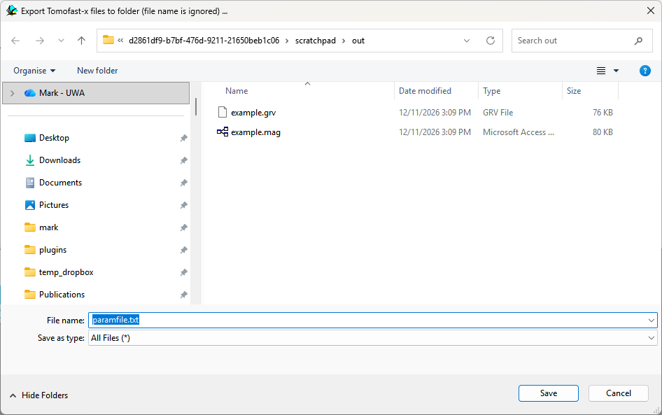

Exporting Tomofast-x / TransD files
Noddy models can be used as synthetic test cases for geophysical inversion. Two items in write a complete, ready-to-run input folder for the Tomofast-x inversion code.
Tomofast-x Inversion Files
Choose and pick a folder. Only the folder is used; the file name typed in the dialog is ignored.

| File | Contents |
|---|---|
model_grid.txt | Tomofast-x model grid: the core cells plus horizontal padding. |
model_density.txt | Density model (kg/m³), one value per grid cell. |
model_susceptibility.txt | Susceptibility model (SI), one value per grid cell. |
data_grav.csv, data_magn.csv | Observation points (the value column is 0). |
paramfile_grav.txt | Parameters for a gravity inversion. |
paramfile_magn.txt | Parameters for a magnetic inversion. |
paramfile_joint.txt | Parameters for a joint (cross-gradient) inversion. |
How the mesh is built
- The core cells are the Noddy block at the Geophysics cube size set in Block Options.
- Horizontal padding cells grow by a factor of 1.15 per cell out to a distance equal to the model depth, and have zero density and susceptibility. There is no vertical padding.
- Z is elevation. Without topography the top of the mesh is the top of the Noddy block; with topography loaded each column of cells hangs from the topographic surface.
- X and Y include the false easting and northing from Block Options.
- Observation points are at the centres of the core cells, at the survey height (above the topography for draped surveys, otherwise above the top of the block).
- Remanence and anisotropy cannot be represented in Tomofast-x's scalar model and are ignored; the X susceptibility is used.
The parameter files set useSyntheticModelForDataValues = 1, so Tomofast-x first calculates the “observed”
data from the exported models and then inverts them. All paths in the parameter files are relative to the export folder,
so the folder can be moved or zipped. Run Tomofast-x with that folder as the working directory (the Tomofast-x QGIS plugin
does this for you).
TransD Inversion Files
writes all the Tomofast-x files above into the chosen folder, plus:
| File | Contents |
|---|---|
local_weights.txt | A weight of 1.0 for every mesh cell, in the same layout as model_density.txt. |
paramfile_transd_grav.txt | TransD gravity run, using the sensitivity matrix in OUTPUT_grav/SENSIT and writing to OUTPUT_grav_TRANSD. |
paramfile_transd_magn.txt | TransD magnetic run, using OUTPUT_magn/SENSIT and writing to OUTPUT_magn_TRANSD. |
data_vals_filename in the TransD parameter files points at the exported observation-point file, whose values
are 0, so replace it with your own data file before running.Noddy · open source under the MIT licence · Loop3D/noddy_qt